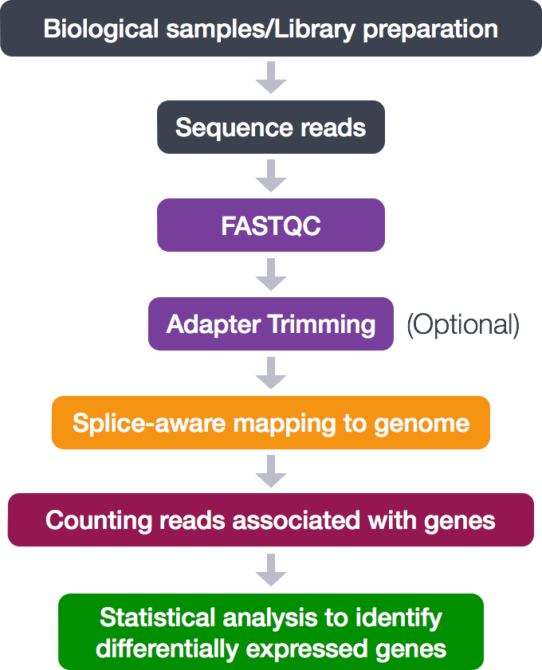

Approximate time: 90 minutes
Learning Objectives:
- Understanding the alignment method STAR utilizes to align sequence reads to the reference genome
- Identifying the intricacies of alignment tools used in NGS analysis (parameters, usage, etc)
- Choosing appropriate STAR alignment parameters for our dataset
Read Alignment

Now that we have explored the quality of our raw reads, we can move on to read alignment. We perform read alignment or mapping to determine where in the genome the reads originated from. The alignment process consists of choosing an appropriate reference genome to map our reads against and performing the read alignment using one of several splice-aware alignment tools such as STAR or HISAT2. The choice of aligner is often a personal preference and also dependent on the computational resources that are available to you.
STAR Aligner
To determine where on the human genome our reads originated from, we will align our reads to the reference genome using STAR (Spliced Transcripts Alignment to a Reference). STAR is an aligner designed to specifically address many of the challenges of RNA-seq data mapping using a strategy to account for spliced alignments.
STAR Alignment Strategy
STAR is shown to have high accuracy and outperforms other aligners by more than a factor of 50 in mapping speed, but it is memory intensive. The algorithm achieves this highly efficient mapping by performing a two-step process:
- Seed searching
- Clustering, stitching, and scoring
Seed searching
For every read that STAR aligns, STAR will search for the longest sequence that exactly matches one or more locations on the reference genome. These longest matching sequences are called the Maximal Mappable Prefixes (MMPs):

The different parts of the read that are mapped separately are called ‘seeds’. So the first MMP that is mapped to the genome is called seed1.
STAR will then search again for only the unmapped portion of the read to find the next longest sequence that exactly matches the reference genome, or the next MMP, which will be seed2.

This sequential searching of only the unmapped portions of reads underlies the efficiency of the STAR algorithm. STAR uses an uncompressed suffix array (SA) to efficiently search for the MMPs, this allows for quick searching against even the largest reference genomes. Other slower aligners use algorithms that often search for the entire read sequence before splitting reads and performing iterative rounds of mapping.
If STAR does not find an exact matching sequence for each part of the read due to mismatches or indels, the previous MMPs will be extended.

If extension does not give a good alignment, then the poor quality or adapter sequence (or other contaminating sequence) will be soft clipped.

Clustering, stitching, and scoring
The separate seeds are stitched together to create a complete read by first clustering the seeds together based on proximity to a set of ‘anchor’ seeds, or seeds that are not multi-mapping.
Then the seeds are stitched together based on the best alignment for the read (scoring based on mismatches, indels, gaps, etc.).

Running STAR
Set-up
To get started with this lesson, start an interactive session with 6 cores:
$ srun --pty -p interactive -t 0-12:00 -n 6 --mem 8G --reservation=HBC1 /bin/bash
You should have a directory tree setup similar to that shown below. it is best practice to have all files you intend on using for your workflow present within the same directory. In our case, we have our original FASTQ files generated in the previous section.
rnaseq
├── logs
├── meta
├── raw_data
│ ├── Irrel_kd_1.subset.fq
│ ├── Irrel_kd_2.subset.fq
│ ├── Irrel_kd_3.subset.fq
│ ├── Mov10_oe_1.subset.fq
│ ├── Mov10_oe_2.subset.fq
│ └── Mov10_oe_3.subset.fq
├── results
└── scripts
To use the STAR aligner, load the module:
$ module load gcc/6.2.0 star/2.5.2b
Aligning reads using STAR is a two step process:
- Create a genome index
- Map reads to the genome
A quick note on shared databases for human and other commonly used model organisms. The O2 cluster has a designated directory at
/n/groups/shared_databases/in which there are files that can be accessed by any user. These files contain, but are not limited to, genome indices for various tools, reference sequences, tool specific data, and data from public databases, such as NCBI and PDB. So when using a tool that requires a reference of sorts, it is worth taking a quick look here because chances are it’s already been taken care of for you.$ ls -l /n/groups/shared_databases/igenome/
Creating a genome index
For this workshop we are using reads that originate from a small subsection of chromosome 1 (~300,000 reads) and so we are using only chr1 as the reference genome.
To store our genome indices, we will use the /n/scratch2/ space with large temporary storage capacity. We need to create a directory for the indices within this space:
$ mkdir -p /n/scratch2/username/chr1_hg38_index
The basic options to generate genome indices using STAR are as follows:
--runThreadN: number of threads--runMode: genomeGenerate mode--genomeDir: /path/to/store/genome_indices--genomeFastaFiles: /path/to/FASTA_file--sjdbGTFfile: /path/to/GTF_file--sjdbOverhang: readlength -1
NOTE: In case of reads of varying length, the ideal value for
--sjdbOverhangis max(ReadLength)-1. In most cases, the default value of 100 will work similarly to the ideal value.
Now let’s create a job submission script to generate the genome index:
$ vim ~/rnaseq/scripts/genome_index.run
Within vim we now add our shebang line, the SLURM directives, and our STAR command.
#!/bin/bash
#SBATCH -p short # partition name
#SBATCH -t 0-2:00 # hours:minutes runlimit after which job will be killed
#SBATCH -n 6 # number of cores requested -- this needs to be greater than or equal to the number of cores you plan to use to run your job
#SBATCH --mem 16G
#SBATCH --job-name STAR_index # Job name
#SBATCH -o %j.out # File to which standard out will be written
#SBATCH -e %j.err # File to which standard err will be written
cd /n/scratch2/username/
module load gcc/6.2.0 star/2.5.2b
STAR --runThreadN 6 \
--runMode genomeGenerate \
--genomeDir chr1_hg38_index \
--genomeFastaFiles /n/groups/hbctraining/intro_rnaseq_hpc/reference_data_ensembl38/Homo_sapiens.GRCh38.dna.chromosome.1.fa \
--sjdbGTFfile /n/groups/hbctraining/intro_rnaseq_hpc/reference_data_ensembl38/Homo_sapiens.GRCh38.92.gtf \
--sjdbOverhang 99
$ sbatch ~/rnaseq/scripts/genome_index.run
Aligning reads
After you have the genome indices generated, you can perform the read alignment. We previously generated the genome indices for you in /n/groups/hbctraining/intro_rnaseq_hpc/reference_data_ensembl38/ensembl38_STAR_index/ directory so that we don’t get held up waiting on the generation of the indices.
Create an output directory for our alignment files:
$ cd ~/rnaseq/raw_data
$ mkdir ../results/STAR
STAR command in interactive bash
For now, we’re going to work on just one sample to set up our workflow. To start we will use the first replicate in the Mov10 over-expression group, Mov10_oe_1.subset.fq. Details on STAR and its functionality can be found in the user manual; we encourage you to peruse through to get familiar with all available options.
The basic options for aligning reads to the genome using STAR are:
--runThreadN: number of threads / cores--readFilesIn: /path/to/FASTQ_file--genomeDir: /path/to/genome_indices_directory--outFileNamePrefix: prefix for all output files
Listed below are additional parameters that we will use in our command:
--outSAMtype: output filetype (SAM default)--outSAMunmapped: what to do with unmapped reads
NOTE: Default filtering is applied in which the maximum number of multiple alignments allowed for a read is set to 10. If a read exceeds this number there is no alignment output. To change the default you can use
--outFilterMultimapNmax, but for this lesson we will leave it as default. Also, note that “STAR’s default parameters are optimized for mammalian genomes. Other species may require significant modifications of some alignment parameters; in particular, the maximum and minimum intron sizes have to be reduced for organisms with smaller introns” [1].
We can access the software by simply using the STAR command followed by the basic parameters described above and any additional parameters. The full command is provided below for you to copy paste into your terminal. If you want to manually enter the command, it is advisable to first type out the full command in a text editor (i.e. Sublime Text or Notepad++) on your local machine and then copy paste into the terminal. This will make it easier to catch typos and make appropriate changes.
STAR --genomeDir /n/groups/hbctraining/intro_rnaseq_hpc/reference_data_ensembl38/ensembl38_STAR_index/ \
--runThreadN 6 \
--readFilesIn Mov10_oe_1.subset.fq \
--outFileNamePrefix ../results/STAR/Mov10_oe_1_ \
--outSAMtype BAM SortedByCoordinate \
--outSAMunmapped Within \
--outSAMattributes Standard
This lesson has been developed by members of the teaching team at the Harvard Chan Bioinformatics Core (HBC). These are open access materials distributed under the terms of the Creative Commons Attribution license (CC BY 4.0), which permits unrestricted use, distribution, and reproduction in any medium, provided the original author and source are credited.